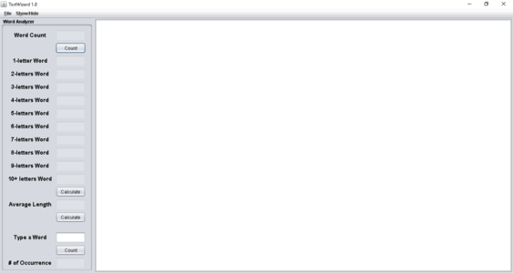

You must have JRE installed in your computer;
to run this, unzip the file and click on the CalcVerter icon


Launcher
main function
DisplayWindow
holds the JFrame, the container and methods for displaying the frame
MainPanel
main JPanel, holds and sets the other two panels
Toolbar
top toolbar for changing Calculator mode to Converter mode and vice versa
Calculator
calculator panel, responds to ActionEvents, does all the mathematical works
CalcText
JTextArea of the Calculator panel for user input, communicates with Calculator for calculations
Converter
converter panel, responds to ActionEvents, does all the unit conversions
KeyEventsHandler
KeyListener manager, responds to the JFrame, handles all KeyEvents